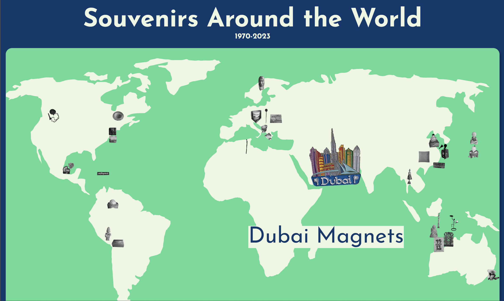

This is a collection made by Angel Yu where she displays her dad's souvenirs from his travels throughout the years.

Angel uses a toggle all button to display two different scroll navigations.
One that is a horizontal scrollbar and a vertical scrollbar.